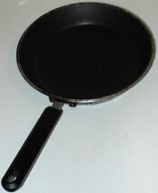

Nou fait des crêpes lé Mardi Gras.
Tu mets d'la flieu dans eune bolle. Tu cruques un ou deux oeufs dans la flieu. A ch't heu tu mêles tout ensembl'ye auve deux d'gouts d'lait, deux' trais tchul'lées, et eune pînchie d'sé. Ch'est mus d'laîssi tout pouor un p'tit brîn.
Tu'alleunmes lé feu auve des alleunmettes et tu mets la câssetrole auve deux brîns d'graisse sus l'feu. Tu vèrses eune grande tchul'lée d'farce dans la câssetrole et la faithe coutchi. Tu touônnes la crêpe (ou bein tu peurs la pitchi s'tu'as l'couothage!)
Quand les crêpes sont tchuites, tu les manges auve du jus d'limon et du chucre, ou des raisîns et d'la sauce dé pommes.
|
Des crêpes |
Some pancakes |
|
D'la flieu |
Some flour |
|
Eune pouque à flieu |
A bag of flour |
|
Eune poutchie d'flieu |
A bag of flour |
|
|
eune poutchie d'flieu |
|
Du lait |
Some milk |
|
un carton d'lait |
|
|
D's oeufs |
Some eggs |
|
|
D's oeufs |
|
Un oeu |
An egg |
|
eune boêtée d'oeufs |
|
|
Eune pînchie du sé |
A pinch of salt |
|
La farce |
Batter |
|
D'la graisse |
Some fat |
|
D'la molle graisse |
Some lard |
|
Eune câssetrole |
A frying pan |
|
 |
Eune câssetrole |
|
Eune bolle |
A bowl |
|
Du chucre |
Some sugar |
|
Du blianc chucre |
Some white sugar |
|
Du jaune chucre |
Some brown sugar |
|
Des limons |
Some lemons |
|
Des lînmons |
Some lemons |
|
Du jus d'limon |
Lemon juice |
|
|
un limon |
|
Des raisîns |
Some currants |
|
Des gros raisîns |
Some sultanas |
|
D'la cannelle |
Some cinnamon |
|
Du myi |
Some honey |
|
Du mi |
Some honey (les gens de l'Est disent mi) |
|
Du mié |
Some honey (les Bréladais disent mié) |
|
D'la g'lée |
Some jam |
|
D'la gélée |
Some jam |
|
D'la gelée d'frâses |
Some strawberry jam |
|
D'la gelée d'preunes |
Some plum jam |
|
D'la gelée d'pommes |
Some apple jam |
|
eune potée dé g'lée |
|
|
Du chocolat |
Some chocolate |
|
Eune barre dé chocolat |
A bar of chocolate |
|
D'la sauce dé pommes |
Some apple sauce |
|
Eune pomme |
An apple |
|
|
eune pomme |
|
Des oranges |
Some oranges |
|
eune orange |
|
|
La couongnac |
Brandy |
|
Des bananes |
Some bananas |
|
|
eune banane |
|
Des vèrts limons |
Limes |
|
Du rhonme |
Rum |
|
D'or sitho |
Golden syrup |
|
Eune livre |
Pound (weight) |
|
Eune démié livre |
Half pound (weight) |
|
Un d'vanté, ou dévanté |
An apron |
|
L'feu |
Fire |
|
D's alleunmettes |
Matches |
|
|
eune boêtée d'alleunmettes |
Viyiz étout: